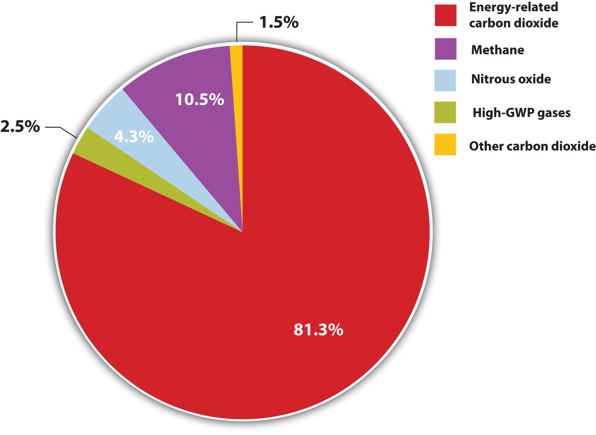

In our last case, we have the opportunity to see the early stage challenges of a high-potential entrepreneurial venture in California. Based on the entrepreneur’s patented scientific knowledge, this firm is scaling up technology to sequester carbon emissions.
Brent Constantz had three decades of entrepreneurial experience, starting with companies based on how cements formed in coral reefs and seashells. Yet those same reefs and shells were threatened by ocean acidification from anthropogenic carbon dioxide (CO2) emissions (Figure 5.12 "Anthropogenic GHG Emissions (A)"). Constantz had a simple insight: if humans could make cement as marine life did (biomimicry), without burning fuel and converting minerals in high-temperature processes, then we could significantly reduce our greenhouse gas (GHG) emissions. With that idea, the Calera Corporation was born.
Figure 5.12 Anthropogenic GHG Emissions (A)
MtCO2eq = million metric tons of CO2 equivalent.
Source: Created from EIA/DOE, Emissions of Greenhouse Gases in the United States 2008, December 2009, figure 1, accessed March 17, 2011, http://www.eia.doe.gov/oiaf/1605/ggrpt/pdf/0573(2008).pdf.
Figure 5.13 Anthropogenic GHG Emissions (B)

Values for power generation are from 2000; other values are from 2003. Ninety percent of all emissions from stationary sources come from those that emit more than 0.1 Mt/yr. Asia has about 40 percent of such sources, followed by 20 percent in North America.
Source: Intergovernmental Panel on Climate Change, “Sources of CO2,” IPCC Special Report on Carbon Dioxide Capture and Storage, 2005, table 2.3 of chapter 2, accessed March 17, 2011, http://www.ipcc.ch/pdf/special-reports/srccs/srccs_wholereport.pdf.
Calera’s goal was to make synthetic limestone and a carbonate cement, both used as major feedstocks for concrete, by mimicking nature’s low-energy process. Calera’s process aimed to precipitatePrecipitate means to separate from a solution or suspension, in this case to form solids from an aqueous solution. carbonate cement from seawater (ideally retentate left by desalination) and combine it with a strong alkaline base. When Constantz accidentally discovered CO2 could enhance his process, he sought a source of CO2. When he brought his technology and his challenge to clean tech venture capitalist Vinod Khosla, Calera became a carbon capture and sequestration (CCS)Also known as carbon capture and storage, this is the general term for any process that removes CO2 from the atmosphere and traps it somewhere else. In practice, CCS often refers to removing CO2 emissions from fossil fuel-fired power plants and injecting it underground. technology company, one with massive storage potential if located proximate to point sources of pollution: power plants emitted 40 percent of US carbon dioxide in 2008 and industrial process facilities another 20 percent. Yet a high level of technical risk and a number of unknowns remained about the breadth of applicability due to the requirement for brines and alkaline materials. Khosla, as the principal investor, shared Constantz’s vision and saw the huge promise and the attendant risk of failure as a high-risk, high-impact home run to completely change assumptions about the power and cement industry or a strikeout swing.
In two and one-half years, Calera went from small batch processing in a lab as a proof of concept to constructing a continuously operating demonstration plant that suggested the feasibility of large-scale operations. In the process Constantz continued to uncover new possibilities. Since his process stripped magnesium and calcium ions from any water charged with minerals, such as seawater, some wastewaters, and brines, it could potentially yield potable water. Could the venture provide water purification technology as well? Could it be economic? Furthermore, wherever seawater and strong bases were not available, Calera needed to replace or produce them. Consequently, Calera developed a more energy-efficient process to use saltwater to produce sodium hydroxide, the base it needed. With that technology, Calera could potentially impact the mature chlor-alkali industry. There were also environmental remediation possibilities. Calera’s initial process had used the base magnesium hydroxide that had been discarded by other companies at its Moss Landing demonstration site. In lieu of seawater, Calera could use subsurface brines, which were often left behind by oil and gas drilling as hazardous wastes. As Constantz and his growing team saw their opportunities expand, the company grew rapidly. If everything worked as hoped, Calera’s method seemed a magic sponge capable of absorbing multiple pollutants and transforming them into desirable products. The reality, though full of possibilities, was complex with many practical hurdles.
Along the way, the Calera team had identified and added to the firm’s multiple areas of expertise—often as the company ran into the complexity of a developing process. Calera also attracted a wide range of curious onlookers who could someday become prospective customers. Government agencies and other companies were eager to get in on the action. To position itself favorably, Calera needed to understand its core competencies and identify key collaborators to bring the new technology to full-scale operation at multiple sites. Simultaneously, it needed to protect its intellectual property and forge a defensible market position. As a high-risk, highly capital-intensive start-up with a huge number of uncertainties and potential ways to address many markets and positively affect the environment, what business model made sense?
CO2-sequestering cement could make a significant impact. In 2008, 2.5 billion metric tons of Portland cement were produced with between 0.8 and 1 ton of CO2 emitted for every ton of cement.All tons indicate metric tons throughout this case. For production information, see Carrie Sturrock, “Green Cement May Set CO2 Fate in Concrete,” San Francisco Chronicle, September 2, 2008, accessed January 8, 2011, http://articles.sfgate.com/2008-09-02/news/17157439_1_cement-carbon-dioxide-power-plants. In 2001 in the United States, the world’s third-largest producer of cement, the average CO2 intensity of cement production was 0.97 tons CO2/ton cement, ranging by kiln from 0.72 tons CO2/ton cement to 1.41 tons CO2/ton cement. Coal was the overwhelming energy source (71 percent) of cement kilns, followed by petroleum coke and other fuels. See Lisa Hanle, Kamala Jayaraman, and Joshua Smith, CO2 Emissions Profile of the U.S. Cement Industry (Washington, DC: US Environmental Protection Agency, 2006), accessed January 8, 2011, http://www.epa.gov/ttnchie1/conference/ei13/ghg/hanle.pdf. Globally, the average CO2 intensity for cement production in 2001 was around 0.82 tons CO2/ton cement. See Ernst Worrell, Lynn Price, C. Hendricks, and L. Ozawa Meida, “Carbon Dioxide Emissions from the Global Cement Industry,” Annual Review of Energy and Environment 26, no. LBNL-49097 (2001): 303–29, accessed January 8, 2011, http://industrial-energy.lbl.gov/node/193. Numbers from California alone in 2008 put CO2 intensity there at 0.85 tons CO2/ton cement. See California Environmental Protection Agency Air Resources Board, “Overview: AB 32 Implementation Status” (presentation at the California Cement Industry workgroup meeting, Sacramento, CA, April 10, 2008), accessed May 29, 2010, http://www.arb.ca.gov/cc/cement/meetings/041008/041008presentations.pdf. China produced nearly 1.4 billion tons of cement in 2008, followed by India (about 200 million tons) and the United States (100 million tons).“Research Report on China’s Cement Industry, 2009,” Reuters, March 5, 2009, accessed January 8, 2011, http://www.reuters.com/article/pressRelease/idUS108100+05-Mar-2009+BW20090305; David Biello, “Cement from CO2: A Concrete Cure for Global Warming?” Scientific American, August 7, 2008, accessed January 8, 2011, http://www.scientificamerican.com/article.cfm?id=cement- from-carbon-dioxide; India Brand Equity Foundation, “Cement,” accessed January 8, 2011, http://www.ibef.org/industry/cement.aspx. Consequently, production of Portland cement, the main binder for conventional concrete, accounted for between 5 and 8 percent of global GHG emissions, making it one of the more GHG-intense industries (Figure 5.14 "Stationary CO").
Figure 5.14 Stationary CO2 Emissions

Values for power generation are from 2000; other values are from 2003.
Source: Intergovernmental Panel on Climate Change, “Sources of CO2,” IPCC Special Report on Carbon Dioxide Capture and Storage, 2005, table 2.3 of chapter 2, accessed March 17, 2011, http://www.ipcc.ch/pdf/special-reports/srccs/srccs_wholereport.pdf.
Portland cement production generates CO2 in two ways (Figure 5.15 "Life Cycle for Portland Cement Produced by Dry Process and Mixed into Concrete"). The first source of emissions is calcination, which decomposes quarried limestone (calcium carbonate) into quicklime (calcium oxide) and releases CO2 as a by-product. The second source is the heat needed to achieve calcination, which requires temperatures over 2700°F (1500°C), or almost one-third the surface temperature of the sun. These temperatures are generally achieved by burning fossil fuels or hazardous wastes containing carbon. Sustaining such temperatures consumes around 3 to 6 gigajoules (1,000 to 2,000 kWh) of energy per ton of cement, making energy costs around 14 percent of the value of total shipments.An alternative method, wet production, has largely been phased out due to its higher energy consumption. Ernst Worrell, “Energy Use and Efficiency of the U.S. Cement Industry” (presentation to the Policy Implementation Committee of the Energy Conservation and GHG Emissions Reduction in Chinese TVEs Project, Berkeley, CA, September 18, 2003). (By comparison, the typical US home uses around 11,000 kWh per year.US Energy Information Administration, “Frequently Asked Questions,” accessed January 29, 2011, http://www.eia.doe.gov/ask/electricity_faqs.asp#electricity_use_home.)
Figure 5.15 Life Cycle for Portland Cement Produced by Dry Process and Mixed into Concrete

Since emissions from calcination are dictated by the chemistry of the reaction and cannot be changed, to save energy and lower emissions, kilns have striven to use heat more efficiently. In California, for instance, emissions from calcination remained steady at 0.52 tons of CO2 per ton of cement from 1990 to 2005, while emissions from combustion declined from 0.40 tons of CO2 per ton of cement to 0.34 tons.California Environmental Protection Agency Air Resources Board, “Overview: AB 32 Implementation Status” (presentation at the California Cement Industry workgroup meeting, Sacramento, CA, April 10, 2008), accessed May 29, 2009, http://www.arb.ca.gov/cc/cement/meetings/041008/041008presentations.pdf. Lowering emissions further, however, had proven difficult.
Given the carbon intensity of cement production, governments increasingly have attended to emissions from cement kilns. Calcination alone emitted 0.7 percent of US CO2 in 2007, a 34 percent increase since 1990 and the most of any other industrial process except energy generation and steel production.US Environmental Protection Agency, Fast Facts: Inventory of U.S. Greenhouse Gas Emissions and Sinks: 1990–2008 (Washington DC: US Environmental Protection Agency, 2010), accessed January 8, 2011, http://www.epa.gov/climatechange/emissions/downloads10/US-GHG-Inventory-Fast-Facts-2008.pdf. California’s Assembly Bill 32, the Global Warming Solutions Act of 2006, includes cement kilns under its GHG emissions reduction program, which would require kilns to further reduce their emissions starting in 2012. The EPA’s Greenhouse Gas Reporting Rule from April 2009 also requires kilns to send data about their GHG emissions to the EPA, a prerequisite for any eventual mandatory emissions reductions.
In addition to being energy and CO2 intense, cement production is also a capital-intense industry. A kiln and its concomitant quarrying operations may require an investment on the order of $1 billion. Consequently, about a dozen large multinational companies dominate the industry. In 2010 there were 113 cement plants in the United States in 36 states, but foreign-owned companies accounted for about 80 percent of US cement production.
Despite this ownership structure, actual cement production and consumption is largely regional. The cement industry moves almost 100 percent of its product by truck; the majority goes to ready-mix concrete operators, from plant to use. The entire US cement industry shipped $7.5 billion of products in 2009, a decline from $15 billion in 2006 since domestic construction had declined.Portland Cement Association, “Overview of the Cement Industry: Economics of the U.S. Cement Industry,” December 2009, accessed January 8, 2011, http://www.cement.org/basics/cementindustry.asp. Worldwide, the cement industry represented a $140 billion market in 2009 with about 47 percent poured in China.
Although cement can be used to produce mortar, stucco, and grout, most cement is used to produce concrete. To make concrete, cement is mixed in various proportions with water and aggregates, including fine aggregates such as sand and coarse aggregates such as gravel and rocks. (Concrete cement is commonly called simply concrete, although asphalt is also technically a type of concrete where the binder is asphalt instead of Portland cement.) The cement itself comes in five basic classes, depending on the desired strength, time to set, resistance to corrosion, and heat emitted as the cement sets, or hydrates. Though cement plays a crucial role in the properties of concrete, the other ingredients also matter. Aggregates help give concrete its strength and appearance. Plasticizers can be added in smaller quantities, as can materials such as coal fly ash or slag from blast furnaces to vary the concrete’s strength, weight, workability, and resistance to corrosion. Some states, such as California, require fly ash and slag be added to concrete to reduce its GHG intensity, improve the durability of the final material, and prevent these aggregates from entering landfills as waste materials.
A typical mix of concrete might contain by mass one part water, three parts cement, six parts fine aggregate, and nine parts coarse aggregate. Thus a cubic yard of concrete, which weighs roughly two and one-half tons (2,000 to 2,400 kg/m3), would require approximately 300 pounds (36 gallons) of water, 900 pounds of cement (9.5 bags, or 9.5 cubic feet), and 4,500 pounds of total aggregates. Varying amounts of air can also be trapped, or entrained, in the product. Cement, at around $100/ton in 2010, is normally about 60 percent of the total cost of poured concrete. Aggregates, in contrast, cost closer to $10/ton.
Making concrete adds more GHG emissions from, for instance, quarrying and transporting stone and keeping the water at the right temperature (from 70 to 120°F) to mix effectively. As the cement in concrete cures, it carbonates, which is the process in which CO2 interacts with the alkaline pore solutions in the concrete to form calcium carbonate. This process takes decades to occur and never accounts for more than a few percent of carbon sequestrations in cement.
By using less energy, Calera’s process already promised lower emissions. More important, using a standard construction material, cement, to capture CO2 would mean sequestration capacity scaled directly with economic activity as reflected in new construction. For instance, the Three Gorges Dam in China used approximately fifty-five million tons of concrete containing eight million tons of cement. The concrete in the dam is enough to pave a sixteen-lane highway from San Francisco to New York.Bruce Kennedy, “China’s Three Gorges Dam,” CNN, accessed January 8, 2011, http://www.cnn.com/SPECIALS/1999/china.50/asian.superpower/three.gorges. The comparison road value is derived from the Hoover Dam, which used approximately 6 million tons of concrete. US Department of the Interior, “Hoover Dam: Frequently Asked Questions and Answers,” accessed January 8, 2011, http://www.usbr.gov/lc/hooverdam/faqs/damfaqs.html. Hence if Calera cement had been used in that dam, it could have sequestered roughly four million tons of CO2 rather than emitting approximately seven million additional tons of it, for a net difference of eleven million tons. If Calera had manufactured the stones used as aggregate in the dam’s concrete, emissions potentially could have been reduced even more, so long as Calera’s process produced fewer emissions than quarrying the equivalent aggregate. The promise remained but so did the question: in how many places was the Calera process viable, and where did the economics make sense?
Brent Constantz had focused his career on how nature makes cements and how we can apply those techniques to other problems. He now faced the challenge of moving from niche markets for small-scale, specialty medical cements to the mainstream of international construction, commodity materials, and carbon sequestration. For these markets Calera’s product promised negative net CO2 emissions but first had to compete on cost, set time, strength, and durability. Calera would need to pass all appropriate standards as well as target applications for which people would be willing to pay a premium for carbon-negative concrete. In addition, the chain of liability often terminated at the cement producer in the highly litigious construction industry. Consequently, Calera cement had to be deemed beyond reproach to penetrate the market. But if it was, then its ability to reduce GHG emissions would appeal to many in the construction industry who sought to lower costs and improve their environmental image.
A rock climber and wind surfer, Constantz earned his BA in Geological Sciences and Aquatic Biology from the University of California–Santa Barbara in 1981 and went on to earn his master’s (1984) and PhD (1986) in Earth Sciences from University of California–Santa Cruz. He received a US Geological Survey postdoctoral fellowship in Menlo Park, California, during which he studied isotope geochemistry. Next as a Fulbright Scholar in Israel, he studied the interaction of crystals and proteins during biomineralization. At that time, Constantz developed medical cements to help heal fractured or worn bones, and in 1988 he founded his first company, Norian Corporation, in Cupertino, California, to commercialize those medical cements. When Norian was sold in 1998 to Synthes, a company with $3.4 billion in sales in 2009,Synthes, “Synthes Reports 2009 Results with 9% Sales Growth and 13% Net Earnings Growth in Local Currency (6% and 12% in US$),” news release, February 17, 2010, accessed January 8, 2011, http://www.synthes.com/html/News-Details.8013.0 .html?&tx_synthesnewsbyxml_pi1[showUid]=39. Constantz became a consulting professor at Stanford University, where he continued to teach courses on biomineralization, carbonate sedimentology, and the “Role of Cement in Fracture Management” through 2010.Stanford biography at Stanford Biodesign, “People: Brent Constantz Ph.D.,” accessed January 8, 2011, http://biodesign.stanford.edu/bdn/people/bconstantz.jsp.
During his time at Stanford, Constantz founded and provided leadership for three more medical cement companies: Corazon, bought by Johnson & Johnson; Skeletal Kinetics, bought by Colson Associates; and Biomineral Holdings, which Constantz still controlled. He served on the board of directors of the Stanford Environmental Molecular Science Institute and also won a variety of awards, including a University of California–Santa Cruz Alumni Achievement Award in 1998 and a Global Oceans Award in 2004 for advancing our understanding of and helping to conserve oceans.
Indeed, climate change’s impact on oceans was increasingly on Constantz’s mind. In an interview with the San Francisco Chronicle, Constantz stated, “Climate change is the largest challenge of our generation.”Carrie Sturrock, “Green Cement May Set CO2 Fate in Concrete,” San Francisco Chronicle, September 2, 2008, accessed January 8, 2011, http://articles.sfgate.com/2008-09-02/news/17157439_1_cement-carbon-dioxide-power-plants. Constantz was concerned specifically with ocean acidification, which was destroying coral, the very topic that had inspired him for years. As CO2 is emitted into the atmosphere, a portion is absorbed by the oceans, forming carbonic acid by roughly the same process that gives carbonated beverages their bubbles. Constantz recognized that the process threatened by CO2 emissions—natural biomineralization—was also a solution. He founded Calera Corporation in 2007.
The name Calera is Spanish for lime kiln, but it also refers to a stratum of limestone underlying parts of California. That layer likely formed one hundred million years ago when seafloor vents triggered precipitation of calcium carbonate. Constantz found that a similar inorganic process to precipitate carbonates could make construction-grade cement. In fact, early lab work revealed the surprising finding that adding CO2 could increase the reaction’s yield eightfold. In one of his regular conversations with Khosla about the company, Constantz wondered out loud where to get more CO2. Khosla, a prominent clean tech investor, immediately saw the answer: carbon sequestration. If Calera could make cement with CO2, cement could now be produced that was, in fact, carbon negative. First-round funding for the enterprise came from Khosla in 2007. No business plan was written, and in 2010 there still was no formal board or enough clarity to develop a strategic plan.
Figure 5.16 Approximate Life Cycle for Calera Cement
Calera’s method puts power plant flue gases that contain CO2 in contact with concentrated brines or concentrated seawater, which contain dissolved magnesium and calcium ions. Hydroxides and other alkaline materials are added to the seawater to speed the reaction between the CO2 and minerals.See Brent R. Constantz, Cecily Ryan, and Laurence Clodic, Hydraulic cements comprising carbonate compound compositions, US Patent 7735274, filed May 23, 2008, and issued June 15, 2010. That reaction precipitates carbonates of magnesium and calcium, the cementitious materials found in coral reefs and seashells, thus storing the CO2 and leaving behind demineralized water. Unlike conventional cement kilns, Calera can produce its cement at temperatures below 200°F (90°C), dramatically lowering emissions of CO2 from fuel combustion (Figure 5.16 "Approximate Life Cycle for Calera Cement" and Figure 5.17 "Calera Industrial Ecosystem Material and Energy Flows"). In principle, Calera could produce and sell its aggregate, essentially manufactured stones; powdered stones, or cement, the binder in concretes; or supplementary cementitious material (SCM), an additive to improve the performance of concrete that can be added to the cement blend directly or later added to the concrete.
Yet in 2010, each of these materials was in the midst of optimization and testing. Some were early in their product development phase. Furthermore, even though Constantz held nearly two hundred patents or pending patents, including two for Calera’s processes, one for producing the carbonate cement, and another for demineralizing water, the medical cements he was accustomed to in earlier ventures typically used grams or less at a time, not tons or kilotons, and did not require massive machinery, tracts of land, and large capital investments. Calera faced another challenge: the industrial ecosystem.
Figure 5.17 Calera Industrial Ecosystem Material and Energy Flows

One practical application of industrial ecology concepts refers to the collocation of factories or processes that can use each others’ wastes as feedstocks. When the waste stream of one plant becomes the material input of the next, the net effect is to save energy and material and reduce the necessary infrastructure. The most famous industrial ecology park, in Kalundborg, Denmark, included a power plant, a refinery, a pharmaceutical company, a drywall manufacturer, and a fish farm.The park has a website: Industrial Symbiosis, “Welcome to the Industrial Symbiosis,” accessed January 8, 2011, http://www.symbiosis.dk. The power plant, for instance, treated its flue gas to trap sulfur dioxide emissions and thereby produced gypsum, the raw material for drywall. Hot water from the power station went to the fish farm, as did wastes from the pharmaceutical company that could be used as fertilizer. Constantz saw an existing symbiosis between cement plants, power stations, and water supplies, but he would have to plan carefully to insert Calera effectively into that ecology.
If he could enter the markets, Constantz felt the opportunity was there. He commented on the global market for Calera’s technology:
Almost everywhere else in the world but the U.S. can projects get the value for carbon emission reductions. In cap and trade systems, the government sets a “cap” on emissions; if a business’s emissions fall below the cap, it can sell the difference on the market to companies that want to exceed their cap. If Calera proves out, it can go anywhere, set up next to a power plant and get our revenue just by selling carbon credits. That means we could produce cement in a developing country where they basically can’t afford concrete, so they otherwise couldn’t build out their infrastructure or even build houses. And the more cement Calera produces, the more carbon dioxide we remove from the atmosphere.Andrea Larson and Mark Meier, Calera: Entrepreneurship, Innovation, and Sustainability, UVA-ENT-0160 (Charlottesville: Darden Business Publishing, University of Virginia, September 21, 2010).
Figure 5.18 Brent Constantz

Source: University of California–Santa Barbara, Institute for Energy Efficiency Seminar: Brent Constantz, “Sequestering CO2 in the Built Environment,” April 22, 2009, accessed March 4, 2011, http://iee.ucsb.edu/events/seminar-brent-constantz.
As Constantz reflected in his Los Gatos office on Calera’s potential impact on climate change, he observed, “A sufficiently high carbon price would enable a number of business models. Low prices limited the options available to Calera.” Calera planned to offer sequestration services to power plants or other heavy industrial users as its primary business and was therefore interested in any CO2 emissions. “We look at CO2 as a resource—not a pollutant—and a scarce resource. To replace all Portland cement with Calera cement, which we want to do, we would need about 19 billion tons of CO2 annually, forever.”Andrea Larson and Mark Meier, Calera: Entrepreneurship, Innovation, and Sustainability, UVA-ENT-0160 (Charlottesville: Darden Business Publishing, University of Virginia, September 21, 2010).
Government carbon regulations could help Calera generate revenue and customers but were not viewed as crucial. In the European Union’s Emissions Trading Scheme, CO2 in July 2010 traded at around €14/ton, or $18/ton. The Northeastern states’ Regional Greenhouse Gas Initiative (RGGI) that began in 2009 capped GHG emissions from power plants at 188 million tons immediately, roughly a quarter of total US emissions, and will cut GHG emissions of RGGI sources 10 percent from that level by 2018. RGGI allowances sold at between $1.86 and $2.05 per ton at auction in December 2009.European Energy Exchange, “Emission Rights,” accessed January 10, 2011, http://www.eex.com/en; Regional Greenhouse Gas Initiative, “Auction Results: Auction 6,” December 2, 2010, accessed January 10, 2011, http://www.rggi.org/market/co2_auctions/results/auction6. Since RGGI allowed sources to cover up to 10 percent of their emissions by buying offsets, Calera planned to try to convince power companies to enter agreements with Calera rather than buy permits to meet their obligations. On the other side of the country, the Western Climate Initiative (WCI) was designing a cap-and-trade system for power generation and fuel consumption. The WCI comprised 11 Canadian provinces and western US states and would take full effect in 2015, with earlier phases beginning in 2012. In many cases there was strong interest for the future but little appetite for risk or actual implementation in the present, with the possible exception of suppliers to the California electricity market.
At the federal level, Calera also lobbied to have the American Clean Energy and Security Act of 2009 (HR 2454, the Waxman-Markey Bill) include sequestration other than by solely geological means; otherwise, Calera would not be recognized as providing offsets worth allowances in a trading program. The bill exited committee in May 2009 with the expanded sequestration options but then stalled. Before that, carbon capture and sequestration (CCS) debates had focused on geological sequestration, but that solution was expensive, required massive federal subsidies to CO2 emitters, and, according to a 2008 McKinsey & Company report, would not be commercially feasible for another twenty years.McKinsey Climate Change Initiative, Carbon Capture and Storage: Assessing the Economics (New York: McKinsey, 2008), accessed January 10, 2011, http://www.mckinsey.com/clientservice/sustainability/pdf/CCS_Assessing_the_Economics.pdf. Despite the enticing estimates that centuries’ worth of CO2 emissions could be stored underground,Joseph B. Lassiter, Thomas J. Steenburgh, and Lauren Barley, Calera Corporation, case 9-810-030 (Boston: Harvard Business Publishing, 2009), 3, accessed January 10, 2011, http://www.ecch.com/casesearch/product_details.cfm?id=91925. skeptics wondered how long it would stay there, as a sudden release of stored CO2 would be catastrophic. They further noted that gradual leaks would defeat the technology’s purpose and potentially acidify groundwater, causing new problems. Everyone, meanwhile, agreed that much depended on the price of carbon, which was contingent on evolving carbon markets in the United States and Europe.
A new bill with a mix of carbon trading and taxes was in the works in March 2010, and in the absence of congressional action, the EPA was preparing to regulate CO2 under the Clean Air Act per order of the Supreme Court in its 2007 decision Massachusetts v. EPA.Massachusetts v. Environmental Protection Agency, 549 US 497 (2007), accessed January 10, 2011, http://www.supremecourt.gov/opinions/06pdf/05-1120.pdf. Despite the overall failure of the Copenhagen Climate Conference in December 2009—Constantz considered the attempt to negotiate a successor to the Kyoto Protocol “a joke”Andrea Larson and Mark Meier, Calera: Entrepreneurship, Innovation, and Sustainability, UVA-ENT-0160 (Charlottesville: Darden Business Publishing, University of Virginia, September 21, 2010).—the United States did pledge, nonbindingly, to reduce its GHG emissions 17 percent from 2005 levels by 2020 and ultimately 83 percent by 2050, a significant departure from the previous Bush administration. In January 2010, President Obama announced via Executive Order 13514 that the federal government would reduce its GHG emissions 28 percent from 2008 levels by 2020. The federal government was the single largest consumer of energy in the United States. Nonetheless, Constantz claimed that even without climate change regulations, “We will be profitable, we don’t care, we don’t need a price on carbon.”
Aside from climate change legislation, Constantz witnessed regulatory agencies “bending over backward to help us. Fortunately, people are in favor of what we’re doing because I think they see the higher purpose toward which we’re dedicated.”Andrea Larson and Mark Meier, Calera: Entrepreneurship, Innovation, and Sustainability, UVA-ENT-0160 (Charlottesville: Darden Business Publishing, University of Virginia, September 21, 2010). Calera’s process had proven effective, for instance, at trapping sulfur dioxide emissions, currently regulated in the United States under the Acid Rain Program and other standards. Water regulators and air boards alike, a total of nine agencies, eased the way for Calera’s first plant at Moss Landing, California. The site, two hundred acres along Monterey Bay, had seven three-million-gallon tanks for storing seawater, a total volume equivalent to thirty Olympic swimming pools, and permits for pumping sixty million gallons of seawater per day, or nearly seven hundred gallons per second, through the original World War II–era redwood pipe. The site also had five million tons of magnesium hydroxide left from earlier operations, which included making bombs.
In June 2008, Calera collaborated with the nearby Monterey Bay Aquarium Research Institute and Moss Landing Marine Lab to assess and minimize impacts on the bay’s marine ecosystems. Water is a key element of the Calera process, and everything was done to minimize its use. Constantz told a local paper, “We wanted to make sure we weren’t going to do any harm. We’re right next to these world-class oceanographic institutions. These places can publish papers about [the process], whereas most parts of the world don’t have scientists of that caliber to sign off on it.”Lizzie Buchen, “A Green Idea Set in Cement,” Monterey County Herald, October 4, 2008, accessed January 10, 2011, http://www.montereyherald.com/news/ci_10637168. Calera was interested in using the power plant’s water, potentially reducing demand for and impacts on Monterey Bay water. Constantz knew Moss Landing would set the standard for future plants. In fact, turning a site with a negative environmental history into a location that demonstrated clean energy and potable water technologies was very appealing to the entire management team.
The magnesium hydroxide, meanwhile, formed a gray and white crust that stretched for hundreds of yards and was visible from the sky. It provided the alkalinity for Calera’s early production. Massive metal sheds on the otherwise muddy soil housed a variety of production lines. Equally important, across the street stood the largest power plant on the West Coast, Dynegy’s 2,500 MW natural gas-fired plant.
In August 2008, Calera opened its test cement production plant. In April 2009, it achieved continuous operation and was capturing with 70 percent efficiency CO2 emissions from a simulated 0.5 MW coal-fired power plant.Joseph B. Lassiter, Thomas J. Steenburgh, and Lauren Barley, Calera Corporation, case 9-810-030 (Boston: Harvard Business Publishing, 2009), 1, accessed January 10, 2011, http://www.ecch.com/casesearch/product_details.cfm?id=91925. In December 2009, Calera ran a pipe beneath the road to tap into Dynegy’s flue stack, somewhat like sticking a straw in a drink, to capture emissions equivalent to a 10 MW plant as Calera moved up to a demonstration scale project. By spring 2010 the demonstration plant, twenty times the size of the pilot plant, had achieved continuous operation.
Figure 5.19 Moss Landing

The smokestacks at the center are part of the Dynegy power plant. To the right is Calera’s Moss Landing Cement Company, including its demonstration plant, seawater holding tanks, and remaining magnesium hydroxide.
Source: US Army Corps of Engineers Digital Visual Library, accessed September 1, 2010, https://eportal.usace.army.mil/sites/DVL/DVL%20Images/Forms/DispForm.aspx?ID=2573.
A typical cement plant may produce between five hundred thousand and two million tons of cement annually, which meant Calera’s Moss Landing Cement Company would remain a rather small player—or become a massive consumer of water. Seawater is typically only 0.1 percent magnesium ions and 0.04 percent calcium ions.Jay Withgott and Scott Brennan, Environment: The Science Behind the Stories, 3rd ed. (San Francisco: Pearson Benjamin Cummings, 2008), 445. Hence if Calera could extract those ions with perfect efficiency, it could create about 240 tons of calcium and magnesium daily, enough to make just under 590 tons of Calera cement daily. At continuous operation, Calera could produce only about 215,000 tons of cement annually. Calera’s Moss Landing plant could therefore sequester just over 100,000 tons of CO2 per year at full operation with its current water permit.These values assume that Calera’s cement is composed of calcium and magnesium carbonates. Calcium carbonate has a molecular weight of 100 grams per mole; magnesium carbonate has a molecular weight of 84 grams per mole. CO2 thus represents almost exactly half of the weight of each ton of Calera cement produced from standard seawater. This CO2 proportion, however, would not include emissions from energy needed to operate the plant.
Calera, however, had the promise to be more than a cement plant. Because it could sequester CO2, sulfur dioxide, and mercury into carbonates, Calera offered a multipollutant control and remediation technology that might prove to be cheaper than existing methods and generate additional income from the sale of its by-products, cement and demineralized water. The promise of the multiple benefits of Calera’s process attracted attention from many quarters. California’s Department of Transportation was interested, since California uses more concrete than any other state and has its own GHG cap-and-trade program. Egyptian, Moroccan, and Saudi Arabian researchers and builders had expressed interest in the process because of its desalination aspect, and the zero-emissions showcase Masdar City in the United Arab Emirates had considered using Calera cement.Ben Block, “Capturing Carbon Emissions…in Cement?” Worldwatch Institute, January 26, 2009, accessed May 25, 2009, http://www.worldwatch.org/node/5996. Power plants and cement kilns were seeking ways to lower their emissions of all pollutants. Early in 2010, Calera was awarded a grant from the Australian government to build a demonstration plant to capture carbon from a coal-fired plant, which like most in Australia burned particularly dirty brown coal. Constantz by January 2010 had “a backlog of 70 people” representing “100 projects.” He noted that “selecting the right one is a proprietary, large process,” which includes consideration of local feedstocks, regulations, buyers and suppliers, incentives, and other factors.Andrea Larson and Mark Meier, Calera: Entrepreneurship, Innovation, and Sustainability, UVA-ENT-0160 (Charlottesville: Darden Business Publishing, University of Virginia, September 21, 2010).
In addition to considering his suitors, material resources, and business opportunities, Constantz also had to consider his competition. Other companies were trying to make cement in innovative ways to reduce GHG emissions. In 1979, German-born architect Wolf Hilbertz had published a way to produce calcium carbonate from seawater via electrolysis.Wolf Hilbertz, “Electrodeposition of Minerals in Sea Water: Experiments and Applications,” IEEE Journal on Oceanic Engineering 4, no. 3 (1979): 94–113, accessed January 10, 2011, http://www.globalcoral.org/IEEE_JOUR_1979small.pdf. That method had been commercialized as Biorock, also the name of the company, and used to help restore coral reefs by plating calcium carbonate onto rebar. The company Biorock, however, did not seem interested in pursuing terrestrial applications. In contrast, Novacem in England planned to use magnesium oxide and other additives to lower processing temperatures and obviate GHG emissions from cement kilns. Other companies were also attempting to sequester CO2 in cement. Carbon Sciences of Santa Barbara planned to use mine slime (water plus magnesium and calcium residues left in mines) and flue gas to make cement, and Carbon Sense Solutions in Nova Scotia planned to use flue gases to cure cement, thereby absorbing CO2. Nonetheless, Calera so far had kept ahead of these possible competitors and worked on ensuring that its products met familiar engineering performance standards to speed adoption.
Building performance aside, climate scientist Ken Caldeira at the Carnegie Institution’s Department of Global Ecology had publicly doubted that the Calera process would reduce net carbon emissions, as it currently used magnesium or sodium hydroxides, which would have to be produced somehow and did not seem included in life-cycle analyses of carbon emissions. Caldeira had also said that Calera basically took dissolved limestone and converted it back into limestone, and there were active online discussions on this issue.The debate seems to occur mainly over e-mail and groups, for instance, Climate Intervention, “Calera—Fooling Schoolchildren?” accessed January 10, 2011, http://groups.google.com/group/climateintervention/browse_thread/thread/7b5ff4ee64ce759d?pli=1. Calera simply waited for its patents to be published rather than directly refute the charge.
Portland cement was the industrial standard and had been since its invention in 1824. Any change was likely to encounter resistance from producers and consumers, and the standards-setting bodies were necessarily conservative and cautious. An array of organizations, from the American National Standards Institute’s American Standards for Testing and Materials (ASTM) to the Portland Cement Association and American Concrete Institute, in addition to individual companies, conducted their own rigorous quality tests and set many standards.
Ironically, rather than seeing himself as an opponent of the Portland cement industry, Constantz considered himself an ally: “I think we’re going to save their entire industry. As soon as there’s carbon legislation, the asphalt industry is going to eat their lunch. The Portland cement industry is really in trouble without us and they know that. That’s why they’re calling us up.”Andrea Larson and Mark Meier, Calera: Entrepreneurship, Innovation, and Sustainability, UVA-ENT-0160 (Charlottesville: Darden Business Publishing, University of Virginia, September 21, 2010). After all, the industry had tried to reduce emissions by increasing efficiency but could only do so much. Calera’s process appeared to be the breakthrough the industry needed. Moreover, the infrastructure already existed to link cement plants with power plants because the latter often have to dispose of fly ash. Likewise, power plants also consume lots of water, meaning the infrastructure existed to supply the Calera process, presuming the water contained sufficient salts.
Constantz felt Calera could disrupt the carbon sequestration industry, primarily oil and gas exploration companies that had been advocating enhanced recovery through injecting CO2 underground as a form of geological carbon sequestration: injecting compressed CO2 underground forced more oil and gas to the surface. Khosla agreed but was uncertain about the breadth of applicability of the Calera process. An attractive business and a few plants were definitely possible, but Calera had yet to prove it was anything more than a solution for some special cases.
To do so, Calera hoped to outperform all other CCS options, especially retrofits of existing plants. Even if the technical and environmental problems could be solved for widespread CCS, it would be costly, especially in a world without a price on carbon. In April 2010, the US Interagency Task Force on Carbon Capture and Storage estimated the cost of building typical CCS into new coal-fired plants (greenfield development) to be $60 to $114 per metric ton of CO2 avoided, and $103/ton for retrofitting existing plants. That translated into increased capital costs of 25–80 percent. Such plants were also expected to consume 35–90 percent more water than similar plants without CCS.Interagency Task Force on Carbon Capture and Storage, Report of the Interagency Task Force on Carbon Capture and Storage (Washington DC: US Environmental Protection Agency/US Department of Energy, 2010), 27, 33–35, accessed January 10, 2011, http://www.epa.gov/climatechange/downloads/CCS-Task-Force-Report-2010.pdf. The report did not consider a model like Calera’s to be CCS; instead, it defined CCS only as geological sequestration.
Available CCS required much energy to operate, the so-called parasitic load it placed on power plants whose emissions it sequestered. This parasitic load represented a very high cost and penalty for the power plant as it was essentially lost electricity, translating directly into lost revenue. To cover the electricity needed to operate any system that trapped CO2 emissions from the flue and still supply its other customers, the power plant would have to consume more coal and operate longer for the same income.
Constantz noted that geologic CCS typically had parasitic loads around 30 percent. To solve this issue, Calera’s business model was to buy power at wholesale price, becoming the power plant’s electricity customer. The plant could increase its capacity factor to cover this additional power demand or reduce its power sales to the grid without much of a revenue loss. From the plant’s perspective, then, Calera did not alter revenue, unlike other options. Constantz believed Calera’s energy consumption could be much lower than that of CCS assuming the right local mineral and brine inputs could be exploited. In addition, to optimize its power use and price, Calera was designing a process that could take advantage of off-peak power. However, it remained uncertain how many locations met mineral input requirements to make the Calera process economically attractive.
Calera could disrupt other conventional pollution control industries. Existing technologies to control sulfur oxides (SOx), mercury, and other emissions could be supplanted by Calera’s technology. Such pollutants are currently subject to either cap-and-trade programs or Best Available Control Technology, which means companies have to install whatever available pollution control technology achieves the best results. The cost to power plants could be as high as $500 to $700 per kWh to remove these pollutants from their flue gas.Joseph B. Lassiter, Thomas J. Steenburgh, and Lauren Barley, Calera Corporation, case 9-810-030 (Boston: Harvard Business Publishing, 2009), 7, accessed January 10, 2011, http://www.ecch.com/casesearch/product_details.cfm?id=91925. Early experiments suggested that Calera’s process could trap these pollutants with over 90 percent efficiency in a single system, though nitrous oxides (NOx) would still need to be dealt with.
Conceivably, utilities could balk at the prospect of selling a large portion of their electricity to Calera, even if Calera set up shop where carbon was capped, such as the European Union, or approached companies wanting to reduce their emissions voluntarily. Utilities could switch to natural gas or find other ways to cut emissions. Calera, however, saw enough value in its own process and the coal-fired infrastructure that it had considered buying power plants outright and operating them itself.
Finally, Calera considered the possibility of providing a form of energy storage. Power plants could operate more at night, typically when demand was lower, to supply energy for Calera’s electrochemistry process, effectively storing energy in the form of other chemicals. During the day, there would be no increased energy demand from Calera, thereby increasing a power plant’s total energy output. In the same manner, Calera could also store energy from wind farms or other renewable sources.
With many people eager to exploit Calera’s technology, the company emphasized maintaining control. From the very beginning, Constantz limited outside investors to the well-known venture capital investor Vinod Khosla. Khosla cofounded Sun Microsystems in 1982 and left five years later for the venture capital firm Kleiner Perkins Caufield and Byers. Khosla founded his own firm, Khosla Ventures, in Menlo Park, California, in 2004, and invested his own money in sustainable and environmental business innovations. By May 2009, Khosla had made a significant investment in Calera. Despite two rounds of investments, adding seven seasoned vice presidents for functions ranging from intellectual property to government affairs, and successful movement from batch process to continuous operation pilot plant to demonstration plant, Calera still had a board of only two members: Constantz and Samir Kaul of Khosla Ventures. Constantz believed “the largest risk of this company or any other company in this space is board problems. Because Calera had just one investor, it had been spared the problems of several board members, which can tank visionary start-ups.”Andrea Larson and Mark Meier, Calera: Entrepreneurship, Innovation, and Sustainability, UVA-ENT-0160 (Charlottesville: Darden Business Publishing, University of Virginia, September 21, 2010). Bad advice or conflicts posed a bigger threat than “the technology or the market,” a lesson Constantz had taken to heart from his previous enterprises.
The company also protected itself from liability by creating special-purpose entities (SPEs) to operate individual projects. According to Constantz, “We’re a corporation licensing its technology and intellectual property to other separate companies [SPEs] we’ve set up.”Andrea Larson and Mark Meier, Calera: Entrepreneurship, Innovation, and Sustainability, UVA-ENT-0160 (Charlottesville: Darden Business Publishing, University of Virginia, September 21, 2010). For example, the Moss Landing facility was owned and operated by the Moss Landing Cement Company, which, in turn, Calera owned. This division allowed Calera to reduce the threat of litigation and insurance costs at its office headquarters in nearby Los Gatos in Silicon Valley because cement production and associated construction were heavy industries in which equipment scale and complexity could involve expensive mistakes and working conditions posed many hazards. Everyone at the Moss Landing site was required to wear hard hats and safety glasses, and the sodium hydroxide produced by electrochemistry on-site was a toxic product.
The company also had grown to absorb more areas of technical expertise. Aurelia Setton came to Calera in mid-2008 as senior manager of corporate development after completing her MBA at Stanford Business School. She became director of strategic planning in the summer of 2009. Young and committed to sustainable business thinking, Setton had seen the company realize the implications of different technology applications and then move to recruit experts in those areas. First it was how to produce cement with less energy and then how to boost its ability to sequester CO2. Then it was water purification. Then it was electrochemistry, the process of extracting chemicals through splitting them in solution. “If we see enough value in it, we bring it in-house,” Setton said.Andrea Larson and Mark Meier, Calera: Entrepreneurship, Innovation, and Sustainability, UVA-ENT-0160 (Charlottesville: Darden Business Publishing, University of Virginia, September 21, 2010).
Nonetheless, Calera had to recognize limits. For instance, Setton knew “we are not a manufacturing company. Those partnerships are very complicated. People are very interested in getting into our IP [intellectual property], and we need their help, but there’s only one Calera and several of them.” Hence Calera felt it could dictate its terms.
To facilitate deployment, Calera entered a worldwide strategic alliance with Bechtel in December 2009. Bechtel is a global engineering, procurement, and construction (EPC) firm with forty-nine thousand employees. Based in San Francisco, Bechtel operates in about fifty countries and generated $31.4 billion in revenues in 2008. Its past projects included the Channel Tunnel connecting England and France; the San Francisco–area metro system, Bay Area Rapid Transit (BART); and military bases, oil refineries, airports and seaports, nuclear and fossil-fuel-fired power plants, and railroad infrastructure. Calera worked closely with the Renewables and New Technology division in Bechtel’s Power Business Unit. That division had experience with CCS and government grant applications and contracts, which could help Calera. Bechtel also offered a massive network of suppliers. “We didn’t want to go out to a lot of EPC firms,” Constantz explained. “We opted to just go to one firm and let them see what we’re doing.”Andrea Larson and Mark Meier, Calera: Entrepreneurship, Innovation, and Sustainability, UVA-ENT-0160 (Charlottesville: Darden Business Publishing, University of Virginia, September 21, 2010). Bechtel advised Calera on the construction of its demonstration plant and played a pivotal role in worldwide deployment.
Calera pursued other possible collaborators. One was Schlumberger, the oil field and drilling firm with seventy-seven thousand employees and $27 billion in revenues in 2008. Calera sought Schlumberger’s expertise in extracting subsurface brines, which were needed to replace seawater for Calera’s process for inland locations. In early 2010, Calera was also in the midst of signing a deal with a big supplier for its electrochemistry operations. Finally, for power plants, Constantz considered Calera “just another industrial user. We can fight over who keeps carbon credits and all that, but the only time we have a relationship is if they invest in a plant, and we don’t need them to invest.”Andrea Larson and Mark Meier, Calera: Entrepreneurship, Innovation, and Sustainability, UVA-ENT-0160 (Charlottesville: Darden Business Publishing, University of Virginia, September 21, 2010). Nonetheless, Setton believed Calera had leverage in negotiating the terms with a power plant for electricity and CO2.
By mid-2010, Setton conceived of Calera’s possible services as spanning four major categories: clean power, material efficiency, carbon management, and environmental sustainability (Figure 5.20 "Calera Revenue Opportunities"). These opportunities were often interconnected, complex, and affected by changing regulations and markets, so to make money, the company had to manage this complexity and educate multiple audiences. It seemed a daunting, though exciting, balancing act for Setton. It was one she had a chance to hone when the Australian government and TRUEnergy wanted to see what Calera could do.
Figure 5.20 Calera Revenue Opportunities
Source: Andrea Larson and Mark Meier, Calera: Entrepreneurship, Innovation, and Sustainability, UVA-ENT-0160 (Charlottesville: Darden Business Publishing, University of Virginia, September 21, 2010).
The Latrobe Valley, site of TRUEnergy’s Yallourn Power Station in the state of Victoria, Australia, contains about 20 percent of the world’s and over 90 percent of Australia’s known reserves of lignite, or brown coal, an especially dirty and consequently cheap coal. In 2006–2007, Australia produced 65.6 million metric tons of brown coal valued at A$820 million, or about US$10/ton.Ron Sait, “Brown Coal,” Australian Atlas of Minerals Resources, Mines, and Processing Centers, accessed January 10, 2011, http://www.australianminesatlas.gov.au/aimr/commodity/brown_coal_10.jsp. Australia accounted for about 8 percent of the world’s coal exports, and its lignite accounted for about 85 percent of electricity generation in Victoria. The Labor Government had proposed carbon trading in 2009, but that plan had been faltering through 2010. The coal industry nonetheless had invested in various demonstration projects to make brown coal a cleaner source of electricity. Bringing a Calera demonstration plant to the Yallourn Power Station was another such endeavor. The Calera project would eventually be increased to a scale of 200 MW.
The entire Yallourn Power Station had a capacity of 1,480 MW and voracious demand for resources. The plant needed thousands of tons of water per hour at full capacity. Some of that water would need to be sent to treatment afterward. The plant also had the low energy-conversion efficiency typical of coal-fired plants. Compounding that, the plant’s brown coal had a low energy density, about 8.6 gigajoules per ton. In addition, combusting brown coal creates more SOx and NOx than other fuels,The exact NOx and SOx emissions, before pollution control, depend on the design of the combustion unit, but for a variety of designs the US Environmental Protection Agency estimated SOx emissions to be 5 to 15 kg per ton of lignite burned and NOx emissions to be 1.8–7.5 kg per ton of lignite burned. See US Environmental Protection Agency, “Chapter 1: External Combustion Sources,” in AP 42, Compilation of Air Pollutant Emission Factors, Volume 1: Stationary Point and Area Sources, 5th ed. (Research Triangle Park, NC: US Environmental Protection Agency, 1998), 7–8, accessed January 10, 2011, http://www.epa.gov/ttn/chief/ap42/ch01/index.html. Although it is difficult to put an exact price on the cost of controlling emissions in Australia, trading programs in the United States give some insight. The United States runs a cap-and-trade program for NOx and SOx for power plants on the east coast, and from January 2008 to July 2010, permits to emit one ton of SOx decreased from approximately $500 to $50 per ton, while NOx allowances started around $800 before peaking near $1,400 and decreasing to $50 per ton. See the Federal Energy Regulatory Commission, Emissions Market: Emission Allowance Prices (Washington, DC: Federal Energy Regulatory Commission, 2010), accessed January 10, 2011, http://www.ferc.gov/market-oversight/othr-mkts/emiss-allow/2010/07-2010-othr-emns-no-so-pr.pdf. Since the price of an allowance ideally represents the marginal cost to abate an additional ton of emissions, it reflects the cost of control technology. Calera claimed its process, as noted earlier, could achieve up to 90 percent CO2 reduction and do so at a lower price if local resources could provide valuable feedstock. and both pollutants were regulated in Australia.
Calera planned to look for local brines to provide alkalinity for its process. If they were unavailable, Calera would produce alkalinity with its proprietary electrochemistry process, which would increase the cost of cement production. The economics of the project would depend primarily on the price it could get for its cement. Calera had the potential to use wastewaters to provide calcium (Figure 5.21 "Case Study of Yallourn Demonstration Plant"): about one hundred miles from the TRUEnergy plant, a large-scale desalination project was under construction, providing a potential feedstock for the Calera process. Utilizing such wastewater streams also offered potential revenue: as an example, in Europe, a desalination plant had to pay up to €200 per ton to dispose of its brine. Although prices would be different for Australia, Calera could be paid to take such waste brine for its process. Calera also considered using fly ash, a coal-combustion waste, for additional alkaline material.
Figure 5.21 Case Study of Yallourn Demonstration Plant
Source: Adapted from Roland Geyer, Christian Del Maestro, and Adam Rohloff, “Greenhouse Gas Emission Analysis of Two Calera Process Implementation Scenarios at Yallourn Power Station,” Bren School of Environmental Science and Management, May 4, 2010.
With many variables and several unknowns, it was critical to determine the cost of each part of the process to determine the viability of the entire project. Nonetheless, the models depended on various assumptions, and those assumptions changed constantly as the project configuration and other factors changed. Nobody had ever built a Calera system in the field. That left much uncertainty in actual numbers. It also left uncertainty in broader strategies. Under many scenarios, Calera’s energy demand would remain far less than the parasitic load of other CCS options. On the other hand, in some scenarios, Calera would need to have closer to 50 percent electrochemistry ions, which would represent a high energy requirement. How many sites could compete with CCS in terms of this energy requirement? How should that impact the business model and expansion plan of Calera?
TRUEnergy, for sure, could greatly benefit from Calera, beyond the CO2 capture potential. TRUEnergy was a wholly owned subsidiary of the CLP Holdings Group, an electricity generation, distribution, and transmission investor based in Hong Kong with assets in India, China, Southeast Asia, and Australia. Lessons CLP learned now could pay dividends later, and the company had committed to lowering its carbon intensity.CLP Holdings, “Climate Vision,” accessed January 10, 2011, https://www.clpgroup.com/ourvalues/environmental/climatevision/Pages/climatevision.aspx. The Yallourn Power Station, which could have an operating life of forty or more years, could attempt to gain a strategic advantage and improved public image by reducing its carbon emissions in anticipation of eventual regulation. The plant could also potentially use Calera’s processes to lower SOx emissions. Calera’s cement could directly trap these particulates. Indirectly, if Calera purchased power at night, the plant could decrease SOx emissions at times when they were most destructive—typically hot, sunny afternoons—and SOx controls typically most expensive. This load shifting could save money on pollution controls or new generation capacity.
Setton sat in her office, adjoining Constantz’s in the building that Calera shared with the Los Gatos Public Library. Outside her door, a dozen employees worked at cubicles whose low, translucent partitions made them more side-by-side desks than cubicles. A light flashed in a bubble containing a toy-sized display in the foyer to represent CO2 moving from a power plant to a Calera cement plant and then to a concrete mixer truck. Bits of chalky stones, like the ones in vials on Constantz’s desk, represented Calera’s product. The company had grown rapidly and showed enormous promise, but it had yet to build full-scale, commercial plants to fulfill that promise. Setton summarized the situation: “To innovate means you have to protect yourself, have to convince people, have to prove quickly, and have to deploy widely. Two strategic questions are important: one, what are the partnerships that will help us convince the world and bring it to reality, and second, how fast can we deploy. That means resources and allocation. How much do we keep in house, how much do we outsource without losing our protection. Those are key questions as we grow fast.”Andrea Larson and Mark Meier, Calera: Entrepreneurship, Innovation, and Sustainability, UVA-ENT-0160 (Charlottesville: Darden Business Publishing, University of Virginia, September 21, 2010).
The Calera case offers an example of an entrepreneur taking a process performed naturally, but at a small scale in coral reef formation, and applying the inherent principles to cement production on a large scale. This imitation of natural system chemistry and function represents a growing inspirational focus and concrete product design approach for innovation. The following discussion introduces students to the notion of biomimicry in business.
What better models could there be?…This time, we come not to learn about nature so that we might circumvent or control her, but to learn from nature, so that we might fit in, at last and for good, on the Earth from which we sprang.Janine M. Benyus, Biomimicry: Innovation Inspired by Nature (New York: William Morrow, 1997), 2, 9.
Janine Benyus
Humans have always imitated nature. Therefore, biomimicry is probably as old as humanity. Biomimicry as a formal concept is much newer, however. As a design philosophy, biomimicry draws upon nature to inspire and evaluate human-made products and strategies for growth. Biomimetic designers and engineers first examine how plants, animals, and ecosystems solve practical problems and then mimic those solutions or use them to spur innovation. Plants and animals have evolved in relation to each other and the physical world over billions of years. That evolution has yielded successful strategies for adaptation and survival that can, in turn, inform business products, practices, and strategic choices. Nature’s sustainability strategies—a systems perspective, resource efficiency, and nontoxicity—form the core of biomimicry and offer a model on which to base sustainable innovations in commerce.
Janine Benyus, a forester by training, is the central figure in articulating and advocating the principles of biomimicry. In her 1997 book Biomimicry: Innovation Inspired by Nature, she coined the term biomimicryA term coined by Janine Benyus to describe “the conscious emulation of life’s genius” to solve human problems in design and industry. and defined it as “the conscious emulation of life’s genius” to solve human problems in design and industry.Janine M. Benyus, Biomimicry: Innovation Inspired by Nature (New York: William Morrow, 1997), 2. Benyus has called it “innovation inspired by nature. It’s a method, a way of asking nature for advice whenever you’re designing something.”Michael Cervieri, “Float Like a Butterfly—With Janine Benyus,” ScribeMedia, October 22, 2008, accessed April 12, 2010, http://www.scribemedia.org/2008/10/22/float-like-a-butterfly-with-janine-benyus. Benyus also founded the Biomimicry Guild, a consultancy that helps companies apply biomimetic principles, and the Biomimicry Institute, a nonprofit organization that aspires to educate a broad audience.To view a twenty-three-minute video of Janine Benyus talking about biomimicry at the 2005 Technology, Entertainment, Design conference, see Janine Benyus, “Janine Benyus Shares Nature’s Designs,” filmed February 2005, TED video, 23:16, from a speech at the 2005 Technology, Entertainment, and Design conference, posted April 2007, accessed April 12, 2010, http://www.ted.com/talks/janine_benyus _shares_nature_s_designs.html.
Benyus was frustrated that her academic training focused on analyzing discrete pieces of life because it prevented her and others from seeing principles that emerge from analyzing entire systems. Nature is one such system, and Benyus calls for designers and businesses to consider nature as model, mentor, and measure. As she points out, four billion years of natural selection and evolution have yielded sophisticated, sustainable, diverse, and efficient answers to problems such as energy use and population growth. Humans now have the technology to understand many of nature’s solutions and to apply similar ideas in our societies whether at the materials level, such as mimicking spider silk or deriving pharmaceuticals from plants, or at the level of ecosystems and the biosphere, such as improving agriculture by learning from prairies and forests or reducing our GHG emissions by shifting toward solar energy. As the final step, if we assess our own products and practices by comparing them with natural ones, we will have a good sense of how sustainable they ultimately are.
Indeed, Benyus identified a list of principles that make nature sustainable and could do the same for human economic activity:
Such biomimetic principles could be, and have been, exploited to make innovative products in conventional industries. For instance, an Italian ice-axe manufacturer modified its product design after studying woodpeckers. The new design proved more effective and generated higher sales.Kate Rockwood, “Biomimicry: Nature-Inspired Products,” Fast Company, October 1, 2008. Biomimicry notions can be extrapolated further and urge us to assume a sustainable place within nature by recognizing ourselves as inextricably part of nature. Biomimicry focuses “not on what we can extract from the natural world, but on what we can learn from it.”Janine M. Benyus, Biomimicry: Innovation Inspired by Nature (New York: William Morrow, 1997). It also lends urgency to protecting ecosystems and cataloging their species and interdependencies so that we may continue to be inspired, aided, and instructed by nature’s ingenuity.
In its broader, systems-conscious sense, biomimicry resembles industrial ecology and nature’s services but clearly shares traits with William McDonough’s concept of cradle-to-cradle design, Karl-Henrik Robèrt’s Natural Step guidelines, and other sustainability strategies and theories.Each of these concepts relates to sustainable business and each has its own heritage. Hence the concepts are summarized here with a suggestion for further reading. Industrial ecology refers to the industry practice of collocation, which uses wastes from one process as input for another, such as using gypsum recovered from scrubbing smokestack emissions to make drywall. See Thomas E. Graedel and Braden R. Allenby, Industrial Ecology, 2nd ed. (Upper Saddle River, NJ: Prentice Hall, 2003). Nature’s services refer to the ways natural processes, such as photosynthesis and filtration in wetlands, provide goods and benefits to humans, such as clean air and clean water. See Gretchen Daily, ed., Nature’s Services: Societal Dependence on Natural Ecosystems (Washington, DC: Island Press, 1997). Cradle-to-cradle design emphasizes that products should be made to be safely disassembled and reused, not discarded, at the end of their lives to become feedstocks for new products or nutrients for nature. See William McDonough and Michael Braungart, Cradle to Cradle: Remaking the Way We Make Things (New York: North Point Press, 2002). The Natural Step is a strategic framework that considers human economic activity within the broader material and energy balances of the earth; it holds that because we cannot exhaust resources or produce products that nature is unable to safely replenish or degrade, we must switch to renewable and nontoxic materials. See Karl-Henrik Robèrt, The Natural Step Story: Seeding a Quiet Revolution (Gabriola Island, Canada: New Society Publishers, 2008); Natural Step, “Home,” accessed April 12, 2010, http://www.naturalstep.org; and Natural Step USA, “Home,” accessed April 12, 2010, http://www.naturalstep.org/usa. Benyus has even explicitly aligned biomimicry with industrial ecology to enumerate ten principles of an economy that mimics nature.Janine M. Benyus, Biomimicry: Innovation Inspired by Nature (New York: William Morrow, 1997), 252–77.
While biomimicry’s concepts can be applied at various scales, they are most often considered at the level of individual products or technologies. Velcro is perhaps the best-known example. In the 1940s, Swiss engineer George de Mestral noticed burrs stuck to his clothes and his dog’s fur after they went for a hike. He analyzed the burs and fabric under a microscope and saw how the hooks of the former tenaciously gripped the loops of the latter. He used this observation to invent Velcro, a name he derived from velours (French for velvet) and crochet (French for hook). Over the next several years, he switched from cotton to nylon to improve product durability and refined the process of making his microscopic arrays of hooks and loops (Figure 5.22 "Magnified Burdock Bur and Scanning Electron Microscope Image of Velcro"). He then began to file patents worldwide. Velcro now is used in countless ways—including space suits, wallets, doll clothes, and athletic shoes.
Figure 5.22 Magnified Burdock Bur and Scanning Electron Microscope Image of Velcro

Source: Jean-Marie Cavanihac. Used with permission.

Source: Jim Ekstrom. Used with permission.
Plants inspired another example of early design biomimicry.Many examples of biomimicry can be found at the Biomimicry Institute’s website, Ask Nature, “Home,” accessed April 12, 2010, http://www.asknature.org. The 2009 Biomimicry Conference in San Diego included an overview of biomimetic products; footage from that conference is available: “Biomimicry Conference 2009—San Diego,” YouTube video, 3:26, from the Zoological Society of San Diego’s Biomimicry Educational Conference on October 1–2, 2009, posted by MEMSDisplayGuy, November 9, 2009, accessed April 8, 2010, http://www.youtube.com/v/r-WUPr5LUR8. Joseph Paxton, a gardener, was charged with caring for an English duke’s giant Amazon water lily (Victoria amazonica), which British travelers had brought back from South America in the 1830s. The lily pads were so massive and buoyant that Paxton could put his young daughter on them and they would not sink. Intrigued, Paxton studied the underside of the water lily. He then used the rib-and-spine design that kept the water lilies afloat to build a greenhouse. A few years later, he applied the same principles to design the Crystal Palace for the 1851 Great Exhibition in London (Figure 5.23 "Interior of London’s Crystal Palace, the Construction of Which Was Inspired by the Leaf Structure of the Amazon Water Lily"). The building relied on cast iron ribs to support glass plates and was a forerunner of modular design and modern greenhouses.Lucy Richmond, “The Giant Water Lily That Inspired the Crystal Palace,” Telegraph (UK), May 7, 2009, accessed January 10, 2011, http://www.telegraph.co.uk/comment/letters/5285516/The-giant-water-lily-that-inspired-the-Crystal-Palace.html; “Leaves Given Structural Support: Giant Water-Lily,” Ask Nature, accessed April 8, 2010, http://asknature.org/strategy/902666afb8d8548320ae0afcd54d02ae.
Figure 5.23 Interior of London’s Crystal Palace, the Construction of Which Was Inspired by the Leaf Structure of the Amazon Water Lily
Source: The Builder 12 (1854): 307. To view a photograph of the underside of an Amazon water lily pad, visit http://asknature.org/strategy/902666afb8d8548320 ae0afcd54d02ae#changeTab (accessed May 6, 2010).
More recently, architects have learned how to regulate building temperatures by studying termite mounds. In 1995, architect Mick Pearce and engineers from Arup Associates obviated the need for an air-conditioning system for the Eastgate Centre in Harare, Zimbabwe, by using a series of air shafts and the thermal mass of the building. That alone saved $3.5 million in construction costs. The shops and offices in the Eastgate Centre use 65 percent less energy than comparable buildings to maintain a comfortable temperature, reducing total energy needs by 10 percent and making rent 20 percent cheaper than comparable buildings. The design was inspired by termites (Macrotermes michaelsei) that built mounds ten to twenty feet tall while maintaining the structures’ internal temperature at 87°F, the ideal temperature to grow the fungi the termites eat, even when external temperatures dropped to 70°F. The termites use heat stored in the mud to help regulate temperature and open and close hatches in shafts that vent hot air and draw in cooler air.“Eastgate Centre Building: Passive Heating and Cooling Saves Energy,” Ask Nature, accessed November 16, 2009, http://www.asknature.org/product/373ec79cd6dba791 bc00ed32203706a1; “Ventilated Nests Remove Heat and Gas: Mound-Building Termites,” Ask Nature, accessed April 12, 2010, http://www.asknature.org/strategy/8a16bdffd27387cd2a3a995525ea08b3; Abigail Doan, “Green Building in Zimbabwe Modeled after Termite Mounds,” Inhabit, December 10, 2007, accessed January 10, 2011, http://inhabitat.com/building-modelled-on-termites-eastgate-centre-in-zimbabwe.
Interface Flooring Systems, a sustainability-minded carpet company, took another lesson from nature: leaves and twigs never look out of place on the forest floor, no matter how they are scattered or if they vary subtly in hue and shape. In 2000, the InterfaceFLOR division built this lesson into its Entropy line of carpet tiles, part of its platform of biomimetic products. Each carpet tile has a different random pattern within a basic design and color variations within an overall palette (Figure 5.24 "Fall Leaves, Which Inspired InterfaceFLOR’s Entropy Carpet Line"). This variation creates a harmonious whole and eliminates the need to match specific dyes or install tiles in a particular direction, which in turn saves money, material, and time for the initial installation and subsequent repairs. The company estimates installing Entropy carpet wastes only 1.5 percent of the carpet compared with the industry average of 14 percent for broadloom carpet.“i2™ Carpet and Flooring: As-Needed Tile Replacement Saves Resources,” Ask Nature, accessed January 10, 2011, http://www.asknature.org/product/a84a9167f21f1cc 690e0e673c4808833; InterfaceFLOR, “i2™ Modular Carpet—How Nature Would Design a Floor,” accessed April 12, 2010, http://www.interfaceflor.com/Default.aspx?Section=3&Sub=11.
Figure 5.24 Fall Leaves, Which Inspired InterfaceFLOR’s Entropy Carpet Line
Source: Mark Meier. Used with permission. To view examples of InterfaceFLOR’s carpet designs, visit http://www.interfaceflor.com/default.aspx?Section=2&Sub=4 (accessed May 6, 2010).
Biomimicry can also aid sophisticated electronics. The communication technology company Qualcomm has applied the principle that makes butterflies and peacock feathers iridescent to full-color electronic displays, from cell phones to tablet computers. Its product, Mirasol, relies on what Qualcomm calls interferometric modulation within a microelectromechanical systems device. The display consists of pixels that contain two layers, a glass plate, and a reflective layer over a base substrate. Minute voltage differences change the distance between the plates in individual pixels, producing interference patterns that create different colors. The pixels do not need their own backlighting, unlike LCDs, and hence use very little energy and remain highly visible even in bright sunlight. The technology won several awards from 2008 to 2010, including the Wall Street Journal 2009 Technology Innovations Award in the semiconductor category and LAPTOP magazine’s 2010 Best Enabling Technology.Qualcomm, “Mobile Displays: Mirasol Display Technology,” accessed January 10, 2011, http://www.qualcomm.com/products_services/consumer_electronics/displays/mirasol; “Mirasol Display Hands-On High-Res,” YouTube video, 0:58, posted by engadget, January 8, 2010; accessed April 12, 2010, http://www.youtube.com/v/jmpBgaPGYKQ; Mirasol Displays, “How It Works,” accessed January 10, 2011, http://www.mirasoldisplays.com/how-it-works; and Mirasol Displays, “Press Center: Awards,” accessed January 10, 2011, http://www.mirasoldisplays.com/awards.
Nature provides a rich source of ideas that can make human-designed products and corporate strategies more efficient and resilient, and less toxic—and therefore more sustainable. Nature’s ecosystems avoid waste: what is discarded by one species is often used by another as input or nutrition. Nature solves problems with the materials at hand, the very building blocks of life, rather than exotic and synthetic chemicals. Its systems are self-energizing; nature runs on sunlight, mediated by photosynthesis. When strategy executives or product designers operate from a biomimicry vantage point, considering its principles and the examples of plants and animals that apply, they can use nature’s models to create sustainable business innovations.
Describe each of the following for Calera: